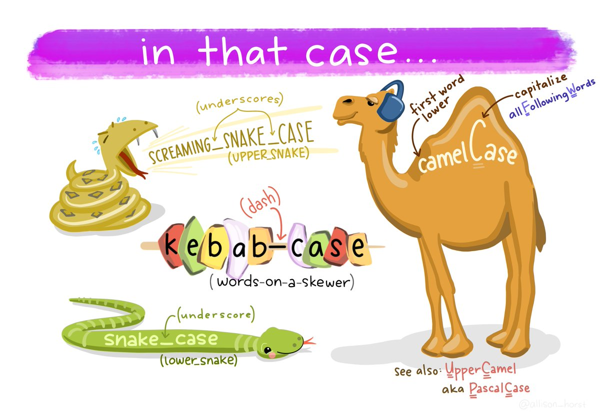

Lesson 10: Tidy Data
Readings
Required:
Ch. 12 Tidy Data, in R for Data Science by Grolemund & Wickham
This cool Twitter thread by Julia Lowndes. If you can’t access the thread or want more detail, the same material is expanded upon on Julie’s Openscapes website. Openscapes is an awesome organization that champions open practices in environmental science - check it out!
Additional resources:
- Jenny Bryan’s Intro to Tidy Data
- the repo this links to has some useful exercises too, but uses the older
spread()andgather()functions
- the repo this links to has some useful exercises too, but uses the older
tidyr[vignette on tidy data](https://cran.r-project.org/web/packages/tidyr/vignettes/tidy-data.html
- Hadley’s paper on tidy data provides a thorough investigation
Announcements
- Guest lecture on Wednesday by Erika Mudrak from the Cornell Statistical Consultation Unit. She will talk about debugging strategies (she has to debug a lot of people’s code!) and about getting help with R. Don’t miss it!
Learning objectives
So far, we’ve only worked with data that were already formatted for effecient processing with tidyverse functions. In this session we’ll learn some tools to help get data into that format - make it tidy and more coder-friendly.
By the end of today’s class, you should be able to:
- Read different types of data into R
- Describe the concept of tidy data
- Determine whether a dataset is in tidy format
- Use
tidyr::pivot_wider()andtidyr::pivot_longer()to reshape data frames - Use
tidyr::unite()andtidyr::separate()to merge or separate information from different columns - Use
janitor::clean_names()to make column headers more manageable
Acknowledgements
Todays lesson integrates material from multiple sources, including the excellent R for Excel users course by Julia Stewart Lowndes and Allison Horst and several other sources specified below.
Set-up
Create a new R Markdown and attach packages
- Open the R Project associated with your personal class GitHub repository.
- PULL to make sure your project is up to date
- Create a new RMarkdown file called
my_tidying.Rmd - Remove all example code / text below the first code chunk and change the output format (in the YAML header) to “github_document”
- Attach the packages we’ll use here (you will have to install
janitorif you don’t already have it):tidyversejanitor
Knit and save your new .Rmd within the project folder.
# Attach packages
library(tidyverse)
library(janitor) ## install.packages("janitor")Part 1: Data import
So far, we’ve been working with datasets that are built into R or we have just provided code to run to import data into R.
When working in the tidyverse, the most common import function we will use are the read_xx() functions from the tidyverse package readr.
read_csv()reads comma delimited files,read_csv2()reads semicolon separated files (common in countries where,is used as the decimal place),read_tsv()reads tab delimited files, andread_delim()reads in files with any delimiter.read_fwf()reads fixed width files. You can specify fields either by their widths withfwf_widths()or their position withfwf_positions().read_table()reads a common variation of fixed width files where columns are separated by white space.
We can also read directly from spreadsheet formats:
readxl::read_excel()reads directly from Excel spreadsheetsgooglesheets::gs_read()from the package googlesheets reads in data directly from Google Sheets
For all of these, we can either read in data from a file path or directly from a URL.
So for example, for a dataset we will be working with later, I can either load my local copy or grab it from the github site where it is made available
lotr <- read_csv("../datasets/lotr_tidy.csv")## Parsed with column specification:
## cols(
## Film = col_character(),
## Race = col_character(),
## Gender = col_character(),
## Words = col_double()
## )lotr <- read_csv("https://raw.githubusercontent.com/jennybc/lotr-tidy/master/data/lotr_tidy.csv")## Parsed with column specification:
## cols(
## Film = col_character(),
## Race = col_character(),
## Gender = col_character(),
## Words = col_double()
## )All the readr::read_xx() functions has many additional options including the ability to skip columns, skip rows, rename columns on import, trim whitespace, and much more. They all use the same syntax, so once you get familiar with one, you can easily apply your knowledge to all the other functions in readr.
You can examine the options by looking at the documentation, e.g ?read_csv(). There is also a very useful overview in Chapter 11 of Grolemund and Wickham’s R for Data Science
Part 2: Tidy data
“Tidy” might sound like a generic way to describe non-messy looking data, but it actually refers to a specific data structure.
A data set is tidy if:
- Each column is a variable;
- Each row is an observation;
- Each cell is a value.
See: Ch. 12 in R for Data Science by Grolemund & Wickham).

An implication of this definition is that each value belongs to exactly one variable and one observation. This also means that tidy data is relative, as it depends on how you define your observational unit and variables.
A key idea here is that instead of building your analyses around whatever (likely weird) format your data are in, take deliberate steps to make your data tidy. When your data are tidy, you can use a growing assortment of powerful analytical and visualization tools instead of inventing home-grown ways to accommodate your data. This will save you time since you aren’t reinventing the wheel, and will make your work more clear and understandable to your collaborators (most importantly, Future You).
Note that to effectively use ggplot() your data must be in tidy format.
Let’s go through some examples to get a better understanding of what tidy data look like.
If I had one thing to tell biologists learning bioinformatics, it would be “write code for humans, write data for computers”. — Vince Buffalo (@vsbuffalo)
Pivoting between long and wide data formats
First, to exlore the powerful tidyr functions for reshaping data, we’ll walk through Chapter 12.3 Pivoting in Grolemund and Wickham’s “R for Data Science”.
Often, datasets will not in tidy format because they are organized to facilitate some use other than analysis. For example, data is often organized to make entry or reading by humans as easy as possible.
This means for most real analyses, you’ll need to do some tidying. The first step is always to figure out what the variables and observations are. Sometimes this is easy; other times you’ll need to consult with the people who originally generated the data. The second step is to resolve one of two common problems:
One variable might be spread across multiple columns.
One observation might be scattered across multiple rows.
Typically a dataset will only suffer from one of these problems; it’ll only suffer from both if you’re really unlucky! To fix these problems, you’ll need the two most important functions in tidyr: pivot_longer() and pivot_wider().
Now that you’re over in “R for Data Science”, you can continue on to also take a look at Chapter 12.4 on separate() and unite() - two simple functions for splitting and combining information from different columns.
Another example to further illustrate tidy and untidy data
To explore tidy data in a different context, let’s work through a tutorial developed by Jenny Bryan using data on the Lord of the Rings movies. This nicely illustrates the concepts of lengtening and widening datasets. It uses outdated functions for pivoting the dataframes, however, so we’ll work through updated code here (i.e. only look at the 01-intro.md file, not the 02-gather.md and 03-spread.md).
First let’s read the intro (01-intro.md) here
Then let’s work through reshaping the data.
1. Import untidy Lord of the Rings data
We bring the data into data frames or tibbles, one per film, and do some inspection.
fship <- read_csv("https://raw.githubusercontent.com/jennybc/lotr-tidy/master/data/The_Fellowship_Of_The_Ring.csv")## Parsed with column specification:
## cols(
## Film = col_character(),
## Race = col_character(),
## Female = col_double(),
## Male = col_double()
## )ttow <- read_csv("https://raw.githubusercontent.com/jennybc/lotr-tidy/master/data/The_Two_Towers.csv")## Parsed with column specification:
## cols(
## Film = col_character(),
## Race = col_character(),
## Female = col_double(),
## Male = col_double()
## )rking <- read_csv("https://raw.githubusercontent.com/jennybc/lotr-tidy/master/data/The_Return_Of_The_King.csv")## Parsed with column specification:
## cols(
## Film = col_character(),
## Race = col_character(),
## Female = col_double(),
## Male = col_double()
## )2. Collect untidy Lord of the Rings data into a single data frame
We now have one data frame per film, each with a common set of 4 variables. Step one in tidying this data is to glue them together into one data frame, stacking them up row wise. This is called row binding and we use dplyr::bind_rows().
lotr_untidy <- bind_rows(fship, ttow, rking)
str(lotr_untidy)## Classes 'spec_tbl_df', 'tbl_df', 'tbl' and 'data.frame': 9 obs. of 4 variables:
## $ Film : chr "The Fellowship Of The Ring" "The Fellowship Of The Ring" "The Fellowship Of The Ring" "The Two Towers" ...
## $ Race : chr "Elf" "Hobbit" "Man" "Elf" ...
## $ Female: num 1229 14 0 331 0 ...
## $ Male : num 971 3644 1995 513 2463 ...lotr_untidy## # A tibble: 9 x 4
## Film Race Female Male
## <chr> <chr> <dbl> <dbl>
## 1 The Fellowship Of The Ring Elf 1229 971
## 2 The Fellowship Of The Ring Hobbit 14 3644
## 3 The Fellowship Of The Ring Man 0 1995
## 4 The Two Towers Elf 331 513
## 5 The Two Towers Hobbit 0 2463
## 6 The Two Towers Man 401 3589
## 7 The Return Of The King Elf 183 510
## 8 The Return Of The King Hobbit 2 2673
## 9 The Return Of The King Man 268 24593. Tidy the untidy Lord of the Rings data
We are still violating one of the fundamental principles of tidy data. “Word count” is a fundamental variable in our dataset and it’s currently spread out over two variables, Female and Male. Conceptually, we need to gather up the word counts into a single variable and create a new variable, Gender, to track whether each count refers to females or males. We use the pivot_longer() function from the tidyr package to do this.
lotr_tidy <-
pivot_longer(lotr_untidy, c(Male, Female), names_to = 'Gender', values_to = 'Words')
lotr_tidy## # A tibble: 18 x 4
## Film Race Gender Words
## <chr> <chr> <chr> <dbl>
## 1 The Fellowship Of The Ring Elf Male 971
## 2 The Fellowship Of The Ring Elf Female 1229
## 3 The Fellowship Of The Ring Hobbit Male 3644
## 4 The Fellowship Of The Ring Hobbit Female 14
## 5 The Fellowship Of The Ring Man Male 1995
## 6 The Fellowship Of The Ring Man Female 0
## 7 The Two Towers Elf Male 513
## 8 The Two Towers Elf Female 331
## 9 The Two Towers Hobbit Male 2463
## 10 The Two Towers Hobbit Female 0
## 11 The Two Towers Man Male 3589
## 12 The Two Towers Man Female 401
## 13 The Return Of The King Elf Male 510
## 14 The Return Of The King Elf Female 183
## 15 The Return Of The King Hobbit Male 2673
## 16 The Return Of The King Hobbit Female 2
## 17 The Return Of The King Man Male 2459
## 18 The Return Of The King Man Female 268Tidy data… mission accomplished!
To explain our call to pivot_longer() above, let’s read it from right to left: we took the variables Female and Male and gathered their values into a single new variable Words. This forced the creation of a companion variable Gender, which tells whether a specific value of Words came from Female or Male. All other variables, such as Film, remain unchanged and are simply replicated as needed.
4. Write the tidy data to a delimited file
Now we write this multi-film, tidy dataset to file for use in various downstream scripts for further analysis and visualization.
write_csv(lotr_tidy, path = "../datasets/lotr_tidy.csv")Your turn
After tidying the data and completing your analysis, you may want to output a table that has each race in its own column. Let’s use the
pivot_wider()function to make such a table and save it as “lotr_wide”OPTIONAL: Use the pivot_longer() function to transform you lotr_wide back to tidy format.
Answer
# let's get one variable per Race
lotr_tidy %>%
pivot_wider(names_from = Race, values_from = Words)## # A tibble: 6 x 5
## Film Gender Elf Hobbit Man
## <chr> <chr> <dbl> <dbl> <dbl>
## 1 The Fellowship Of The Ring Male 971 3644 1995
## 2 The Fellowship Of The Ring Female 1229 14 0
## 3 The Two Towers Male 513 2463 3589
## 4 The Two Towers Female 331 0 401
## 5 The Return Of The King Male 510 2673 2459
## 6 The Return Of The King Female 183 2 268# let's get one variable per Gender
lotr_tidy %>%
pivot_wider(names_from = Gender, values_from = Words)## # A tibble: 9 x 4
## Film Race Male Female
## <chr> <chr> <dbl> <dbl>
## 1 The Fellowship Of The Ring Elf 971 1229
## 2 The Fellowship Of The Ring Hobbit 3644 14
## 3 The Fellowship Of The Ring Man 1995 0
## 4 The Two Towers Elf 513 331
## 5 The Two Towers Hobbit 2463 0
## 6 The Two Towers Man 3589 401
## 7 The Return Of The King Elf 510 183
## 8 The Return Of The King Hobbit 2673 2
## 9 The Return Of The King Man 2459 268# let's get one variable per combo of Race and Gender
lotr_tidy %>%
unite(Race_Gender, Race, Gender) %>%
pivot_wider(names_from = Race_Gender, values_from = Words)## # A tibble: 3 x 7
## Film Elf_Male Elf_Female Hobbit_Male Hobbit_Female Man_Male Man_Female
## <chr> <dbl> <dbl> <dbl> <dbl> <dbl> <dbl>
## 1 The Fellows… 971 1229 3644 14 1995 0
## 2 The Two Tow… 513 331 2463 0 3589 401
## 3 The Return … 510 183 2673 2 2459 268More exercises on the LOTR data
The word count data is given in two untidy and gender-specific files available at these URLs:
https://raw.githubusercontent.com/jennybc/lotr-tidy/master/data/Female.csv
https://raw.githubusercontent.com/jennybc/lotr-tidy/master/data/Male.csv
Write an R script that reads them in and writes a single tidy data frame to file. Literally, reproduce the lotr_tidy data frame and the lotr_tidy.csv data file from above.
Write R code to compute the total number of words spoken by each race across the entire trilogy. Do it two ways:
- Using film-specific or gender-specific, untidy data frames as the input data.
- Using the lotr_tidy data frame (that we generated above) as input.
Reflect on the process of writing this code and on the code itself. Which is easier to write? Easier to read?
Write R code to compute the total number of words spoken in each film. Do this by copying and modifying your own code for totalling words by race. Which approach is easier to modify and repurpose – the one based on multiple, untidy data frames or the tidy data?
Part 3. Cleaning up column names
Using janitor::clean_names()
We’ve noticed in the coronavirus dataset that the variable names have a very inconsistent format. It’s not a problem per se for our ability to work with this dataframe, but it’s a bit annoying to look at.
colnames(coronavirus)## [1] "date" "province" "country" "lat" "long" "type" "cases"In other cases, spaces and special characters in column names of data you import can actually cause problems downstream, so we often may want to clean them up.
The janitor package by Sam Firke is a great collection of functions for some quick data cleaning, like:
janitor::clean_names(): update column headers to a case of your choosingjanitor::get_dupes(): see all rows that are duplicates within variables you choosejanitor::remove_empty(): remove empty rows and/or columnsjanitor::adorn_*(): jazz up tables
Here, we’ll use janitor::clean_names() to convert all of our column headers in our coronavirus data to a more convenient case - the default is lower_snake_case, which means all spaces and symbols are replaced with an underscore (or a word describing the symbol), all characters are lowercase, and a few other nice adjustments.
For example, janitor::clean_names() would update these nightmare column names into much nicer forms:
My...RECENT-income!becomesmy_recent_incomeSAMPLE2.!test1becomessample2_test1ThisIsTheNamebecomesthis_is_the_name2015becomesx2015
If we wanted to then use these columns (which we probably would, since we created them), we could clean the names to get them into more coder-friendly lower_snake_case with janitor::clean_names():
coronavirus <- coronavirus %>%
clean_names()names(coronavirus)## [1] "date" "province" "country" "lat" "long" "type" "cases"And there are other case options in clean_names(), like:
- “snake” produces snake_case (the default)
- “lower_camel” or “small_camel” produces lowerCamel
- “upper_camel” or “big_camel” produces UpperCamel
- “screaming_snake” or “all_caps” produces ALL_CAPS
- “lower_upper” produces lowerUPPER
- “upper_lower” produces UPPERlower

Art by Allison Horst. Check out more here